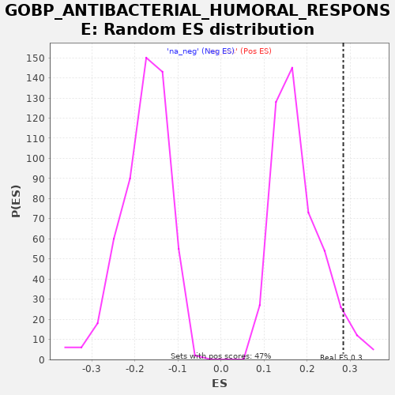

| | | Dataset | A_X_tradeoff |
| Phenotype | NoPhenotypeAvailable |
| Upregulated in class | na_pos |
| GeneSet | GOBP_ANTIBACTERIAL_HUMORAL_RESPONSE |
| Enrichment Score (ES) | 0.2842693 |
| Normalized Enrichment Score (NES) | 1.592901 |
| Nominal p-value | 0.05531915 |
| FDR q-value | 0.7057321 |
| FWER p-Value | 1.0 |
Table: GSEA Results Summary
 Fig 1: Enrichment plot: GOBP_ANTIBACTERIAL_HUMORAL_RESPONSE
Fig 1: Enrichment plot: GOBP_ANTIBACTERIAL_HUMORAL_RESPONSE
Profile of the Running ES Score & Positions of GeneSet Members on the Rank Ordered List
| SYMBOL | RANK IN GENE LIST | RANK METRIC SCORE | RUNNING ES | CORE ENRICHMENT | | 1 | SFTPD | 367 | -0.002 | 0.0266 | Yes |
| 2 | ANG | 644 | -0.004 | 0.0578 | Yes |
| 3 | SPINK5 | 2944 | -0.017 | -0.0150 | Yes |
| 4 | WFDC3 | 2996 | -0.017 | 0.0278 | Yes |
| 5 | JCHAIN | 3249 | -0.019 | 0.0603 | Yes |
| 6 | BPIFA1 | 3909 | -0.024 | 0.0718 | Yes |
| 7 | FGB | 4324 | -0.027 | 0.0960 | Yes |
| 8 | ELANE | 4412 | -0.028 | 0.1369 | Yes |
| 9 | WFDC5 | 4455 | -0.028 | 0.1802 | Yes |
| 10 | PLA2G1B | 4622 | -0.030 | 0.2171 | Yes |
| 11 | LTF | 6497 | -0.051 | 0.1662 | Yes |
| 12 | CAMP | 7219 | -0.062 | 0.1745 | Yes |
| 13 | NOD2 | 7652 | -0.068 | 0.1977 | Yes |
| 14 | SLPI | 8085 | -0.075 | 0.2209 | Yes |
| 15 | OCIAD1 | 8138 | -0.075 | 0.2637 | Yes |
| 16 | WFDC12 | 8623 | -0.083 | 0.2843 | Yes |
| 17 | CTSG | 10615 | -0.122 | 0.2273 | No |
| 18 | IGHM | 12262 | -0.163 | 0.1880 | No |
| 19 | RPL39 | 12548 | -0.172 | 0.2188 | No |
| 20 | PLA2G6 | 13003 | -0.185 | 0.2409 | No |
| 21 | OCIAD2 | 15446 | -0.278 | 0.1607 | No |
| 22 | WFDC2 | 18941 | -0.744 | 0.0263 | No |
Table: GSEA details [plain text format]

Fig 2: GOBP_ANTIBACTERIAL_HUMORAL_RESPONSE: Random ES distribution
Gene set null distribution of ES for GOBP_ANTIBACTERIAL_HUMORAL_RESPONSE